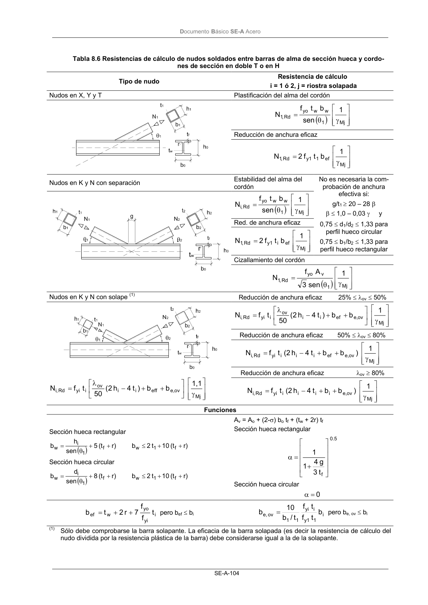

DB-SE-A Acero · edición 2007-10-23 · capa oficial
Documento DB-SE-A-oficial · SHA-256 del PDF 9ed9ea694aabfbda3bfbbef40dfe9223fde05d13c35bc2ba9751e5a96a22a64f
Copia fiel del PDF fuente · Fuente oficial
Ficha de la disposición en la fuente oficial
Formatos: JSON del segmento · Markdown
( ) ) γ θ = Mj 1 w w yo Rd ,1 1 sen b t f N Reducción de anchura eficaz γ = Mj ef 1 y1 Rd ,1 1 b t f 2 N Nudos en K y N con separación Estabilidad del alma del cordón ( ) ) γ θ = Mj 1 w w yo Rd ,i 1 sen b t f N Red. de anchura eficaz γ = Mj ef i y1 Rd ,1 1 b t f 2 N No es necesaria la com- probación de anchura efectiva si: g/t1 ≥ 20 – 28 β β≤ 1,0 – 0,03 γ y 0,75 ≤ d1/d2≤ 1,33 para perfil hueco circular 0,75 ≤ b1/b2≤ 1,33 para perfil hueco rectangular Cizallamiento del cordón ( ) ) γ θ = Mj 1 v yo Rd ,1 1 sen 3 A f N Nudos en K y N con solape (1) Reducción de anchura eficaz 25% ≤λov≤ 50% γ + + − λ = Mj ov e, ef i i ov i yi Rd ,i 1 b b ) t 4 h 2 ( 50 t f N Reducción de anchura eficaz 50% ≤λov≤ 80% γ + + − = Mj ov e, ef i i i yi Rd ,i 1 ) b b t 4 h (2 t f N Reducción de anchura eficaz λov≥ 80% γ + + − λ = Mj ov e, eff i i ov i yi Rd ,i 1,1 b b ) t 4 h 2 ( 50 t f N γ + + − = Mj ov e, i i i i yi Rd ,i 1 ) b b t 4 h (2 t f N Funciones
